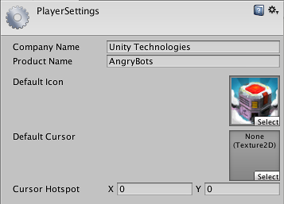

Player
Use the Player settings to set various options for the final game built by Unity.
There are a few general settings that are the same regardless of the build target. These are covered below.
Most settings, however, are platform-specific and divided into the following sections:
- Icon: the game icon(s) as shown on the desktop.
- Resolution and Presentation: settings for screen resolution and other presentation details such as whether the game should default to fullscreen mode.
- Splash Image: the image shown while the game is launching. This section also includes common settings for creating a Splash Screen, which are documented in the Splash Screen section.
- Other Settings: any remaining settings specific to the platform.
- Publishing Settings: details of how the built application is prepared for delivery from the app store or host webpage.
- XR Settings: settings specific to Virtual Reality, Augmented Reality, and Mixed Reality applications.
You can find information about the settings specific to individual platforms in the platform's own manual section. Not all sections are supported on every platform. This table provides a breakdown of which platform support these sections:
| Icon | Resolution and Presentation | Splash Image | Debugging and Crash Reporting | Other Settings | Publishing Settings | XR Settings | |
|---|---|---|---|---|---|---|---|
| Standalone | √ | √ | √ | √ | √ | ||
| iOS | √ | √ | √ | √ | √ | √ | |
| Apple TV / tvOS | √ | √ | √ | √ | √ | ||
| Android | √ | √ | √ | √ | √ | √ | |
| WebGL | -- | √ | (√) | √ | √ | ||
| √ | -- | (√) | √ | √ | |||
| Universal Windows / WSA | √ | √ | √ | √ | √ | √ |
General settings
